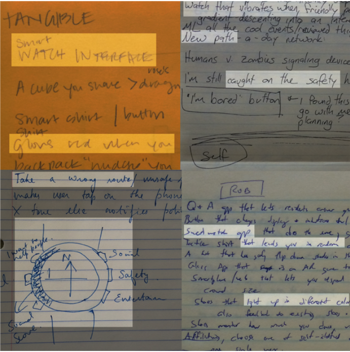
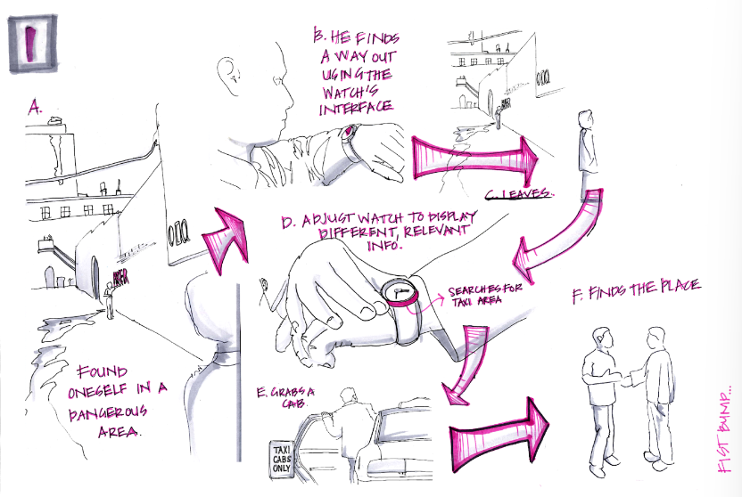

Milestone 3: Define + Ideate
The goal of this project milestone is to define the focus for your semester project (based on the outcome of Milestone 2, your initial needfinding) and to come up with some design alternatives to explore solutions within your problem area.
In this assignment you will revisit the findings from your needfinding, expand your needfinding on a deeper focus, and formulate points of view (POVs) for your potential users. From there, you will craft several “How Might We” (HMW) statements to frame the problem area and intended design goal. Based on the best HMW statements that frame the problem space, you will brainstorm several solutions. Using the best of these solutions, you will sketch out three design alternatives. These design alternatives (and accompanying storyboards) will explore the design space and user experience for your problem area.
Based on the needfinding and analysis conducted in the last milestone, identify and conduct any additional needfinding activities your team requires. Interview at least 2 new people (remember to interview in pairs). If you’ve narrowed down what you want to do (e.g., from health down to cancer recovery), interview a range of users that would be affected in that problem area. Combine the new data with your prior data to see if some interesting themes appear in more than one interview. Feel free to use empathy maps, or journey maps to help you synthesize i.e., find needs and insights from all of your interview data. Optional: Go out and conduct one or two observations of some people in action in the context of your problem domain. Record what, how, and why they are doing what they are doing.
Generate 6+ POVs. You should create at least one POV inspired by each of the interviews your team conducted (these POVs can be generalizations or extrapolations based on the individuals interviewed, they don’t need to be literal representations of your interview participants). Refer to the POV reading/resource and the bootcamp bootleg methods to sanity-check your POVs. Each POV should be formalized as four sentences. Please use the following template to guide your POV generation (italicized sentences are there to guide your POV, and should not be included in your formal POV write ups)1:
We met:
(What specific person did you meet that inspires your work?)
We were surprised to notice:
(Tell us something we didn’t know or wouldn’t have thought about before we started this project. What unique new perspective do you have now? What tension, contradiction, or surprise did you find?)
We wonder if this means:
(What was your leap? What did you infer? This is the need you have uncovered!)
It would be game-changing to:
(This is your call to action. Build on your insight and take an aspirational stance on what you can do as a team. This isn’t your solution – it is the problem to be solved. A problem with a more informed perspective.”
John's Milestone 3 - POVs
Select 1-3 POVs that you find most compelling. Final POV statements should be
written in the following format,
“We met … We were surprised to notice … We wonder if this means … It would
be game changing if …”
Generate 10-15 “How Might We” (HMW) statements for each of your best POVs. Refer to this d.school bootcamp bootleg guide.pdf on how to generate powerful HMW statements (p. 26).
From the pool of all your HMWs generated in the previous step, select the 3 best HMWs. They need not come from different POVs, but we’d like to see a diversity of HMWs. Refer to this brainstorm selection method card or the ideate lecture slides for selecting ideas (Ideate Slide 7 - Design thinking)
This format and the sentences describing how to answer each question are copied directly from the 2022 Stanford PPT about Define, found in the assignment description.
Brainstorm with scraps of paper or post-it notes on how to solve your HMW questions. Remember to do some individual brainstorming first and then do additional brainstorming as a group. Make sure to quickly put up as many ideas as possible. There are no bad ideas at this stage. Try to think of at least 10-15 solutions per each of the 3 best HMWs.
Select the top 3 solutions. Going for a diverse range of ideas is best at this stage.
Brainstorming top 3 Solutions - Milestone 3
Describe in moderate detail three to five tasks that users will perform using your top three solution ideas. There should be at least one each of simple, moderate, and complex tasks. Note: tasks do not say how to carry out the activity, but instead say what the user is trying to achieve. Focus on user behavior, not features. Label each task as simple, moderate, or complex.
In this step your team will develop sketches and storyboards of designs and user experiences. Create sketches and storyboards for the top 3 solutions your team has identified (your design alternatives); they should be drawn (likely by hand) and low fidelity.
Along with each sketch, you will provide a brief narrative storyboard of how the system will work (see examples at end of document). Your design sketches should be sufficiently detailed for a potential user to provide meaningful feedback about the design. In each of the storyboards, walk through how a user would use each of your 3 different solutions. Do not think about specific technologies at this time. You do not need to build a working prototype at this stage. You will get to that in the next phase. Don’t worry about how awesome the sketches look, the goal is to get the information and experience into an external form factor so that you can successfully communicate your ideas to others.
The brainstorming process you follow for this project milestone is important.
Please consider adapting the 10 for 10 method for the brainstorming steps in this assignment. Please use the weekly meeting times you have agreed upon. You all should be working together, especially when you are picking your team’s top POVs, HMWs, and Solutions. Often times, the best ideas will be a combination, extension, or iteration; and this goes best when you all get together and discuss/critique/build-on what you’ve done together.
Fundamentally, you should aim to develop a variety of different design ideas and concepts across the entire possible design space for your problem area. The key is to push the boundaries of the design possibilities.
Note: brainstorming is a significant part of this assignment, so we highly recommend using a visual collaboration tool, like a whiteboard or pen and paper or FigJame or Miro (both of which have free education accounts).
Your deliverable for this milestone is a report.
This report will contain the artifacts your team created for this milestone. Below is an outline of the format you should use for your report, with the section headers and the specific content to include in each section. For each section of the report, please include an explanation of why your team made the choices you made (for example, a justification of why you found these three POV statements to be the most compelling). Make sure that your report adequately reflects the brainstorming process that your group used.
a. Include team name, the names of all team members, and the assignment
number (Milestone 3)
a. Describe what your problem area is.
a. Who you interviewed & what you found out. - Info for this can be found here.
b. Summary of how the new interviews improved upon what you learned from the original needfinding.
optional: If your team conducted observations, where/what you observed and a
summary of the who
a. Present the three top POVs - those are here.
(“We met … We were surprised to notice … We wonder if this means … It would be game changing if …”)
a. Present the three top HMW statements with the POVs they stem from. - All of this information can be found here.
a. Present the three top solutions. Each solution should have a sub-section header (e.g., Solution 1).
In each subsection you should include 1) a description of the solution 2) images of the sketches and storyboards for each solution.
a. Describe your brainstorming and collaborative process. Reflect on the strengths and weakness of your approach. - Talk about how we collaborated on Discord
b. Compare and contrast the three solutions. What are the strengths and weaknesses of each solution?
c. What did you learn from this phase? Was it what you expected?
a. In the appendix, please provide:
- The other 3 POV statements
- All 10 HMW statements generated for each of the top 3 POVs (30 HMW statements in total). Make sure it is clear which POV these HMW statements correspond to.
Note: remember, each section (excluding the Intro and the Appendix) MUST HAVE explanations of your team’s choices.
Submit your report as a PDF in eLC by March 1st, 2024 . Only one person from your team needs to submit the report. Make sure that your group name appears somewhere on your report.
Evaluation for this assignment will be based on the content and quality of the work completed. Evaluation Criteria includes:
Example of output from brainstorming:

Example of a storyboard of a user experience:

Additionally, don't forget to capture interesting moments throughout your term project journey. This will help you create an interesting video at the end of the semester, which will be the final step of your term project. And don’t forget to have fun! 🙂
This assignment incorporates elements of previous assignments from Georgia Tech (Ceara Byrne and others) and Stanford (James Landay).